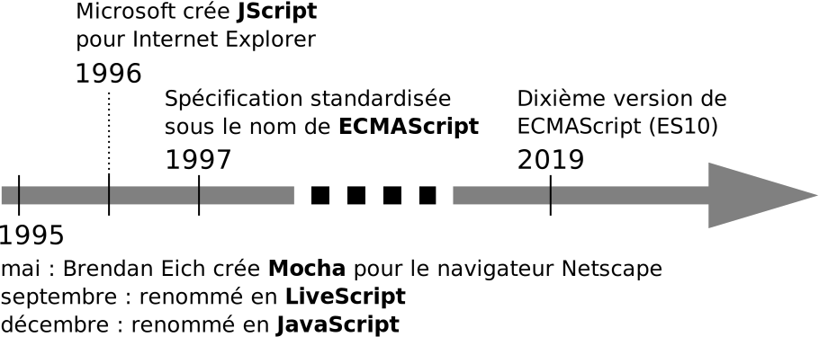
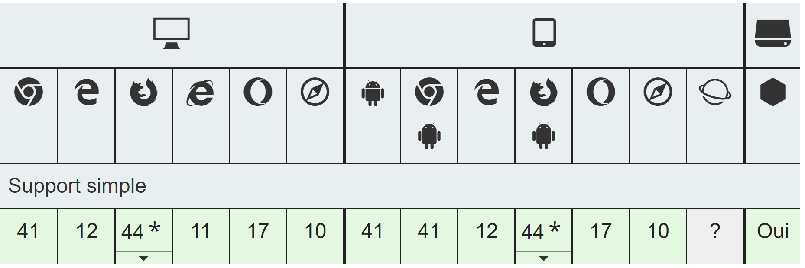

Web avancé
Cours mis à jour par Gaël Guibon
Quelques mots sur le cours
Pré-requis
- Bases de HTML, CSS et javascript
Contenu
- Rappel des technologies client (HTML CSS Javascript)
- Approfondissement des technologies client (Javascript et AJAX)
- Technologies serveur (PHP principalement)
Organisation
- 4 séances de CM de 1h30
- 12 séances de TD de 2h
- CM, TD, TD, CM, TD, TD, TD, CM, TD, CM, TD, TD, TD, TD, TD, TD
Cours magistraux
- Présentation « traditionnelle » : concepts généraux + syntaxe de base
- Démonstrations
- Erreurs fréquentes dans les TD remis
- Correction générale des TD
Travaux dirigés
- Découverte approfondie de la syntaxe
- Réalisations plus poussées
Enseignants de TD
| Groupe | ||
|---|---|---|
| W1 | Gaël Guibon | gael.guibon@univ-lorraine.fr |
| W2 | Mira Bou Saleh | mira.bou-saleh@univ-lorraine.fr |
| W3 | Jonathan Alcuta | jonathan.alcuta@loria.fr |
| SC | Mira Bou Saleh | mira.bou-saleh@univ-lorraine.fr |
Modalités d'évaluation
Quiz
- En début de CM (donc 3 quiz)
- À l'aide de Wooclap
Examen sur ordinateur
- Exercices de code
- Supports autorisés
- Communication interdite
Note finale
- 80% examen, 20% moyenne des quiz
Points bonus
Proportion de TD déposés sur Arche
Technologies client : rappels
- HTML et CSS
- JavaScript
Démo Covid (HTML + CSS)
Technologies client : rappels
- HTML et CSS
- JavaScript
Qu'est-ce que JavaScript ?
Langage de script
- Executé côté client (historiquement)
- Par le navigateur
- Seul langage natif du navigateur
Permet
- De gérer les évènements
- De modifier la mise en forme des éléments de la page
- De modifier le contenu de la page
- De modifier la disposition des élements de la page
- D'inclure des animations
- De traiter les données saisies par l'utilisateur
- ...
Histoire
ECMAScript et JavaScript
ECMAScript est une spécification standard
- Pour obtenir le même résultat quel que soit le navigateur
- Chaque navigateur implémente son moteur en fonction du standard
JavaScript est un dialecte d'ECMAScript
| Navigateur | Moteur JavaScript | ES5 | ES6 |
|---|---|---|---|
| Chrome | V8 | 100% | 98% |
| Firefox | SpiderMonkey | 100% | 98% |
| Internet Explorer | Chakra | 99% | 11% |
| Edge | Chakra | 100% | 96% |
| Safari | JavaScriptCore | 99% | 99% |
Fonctionnement


Quelques éléments de syntaxe
Variables
Quatre types de variables
//Variable numérique
var parfait = 28;
// Chaînes de caractères
var war = 'War, huh, yeah';
var superstition = "Ladders 'bout to fall";
// Booléen
var superstitious = true;
// Objet (en utilisant un initialisateur d'objet)
var edwin = { name: "Starr", born: 1942 };
console.log(edwin.name); // Affiche "Starr"Portée des variables
Variable globale
parfait = 28;Variable locale à la fonction dans laquelle elle se trouve
var parfait = 28;Variable locale au bloc dans lequel elle se trouve (ES6)
let parfait = 28;

Source image : MDN
« En JavaScript, tout est objet »
- Les variables primitives (valeurs numériques, chaînes de caractères et booléens) ne sont pas des objets
- Tout le reste est objet, y compris les tableaux et les fonctions
-
Version objet des variables primitives
Variables primitives Equivalent objet var s = "lala"var s = new String("lala")var i = 28var i = new Number(28)var b = truevar b = new Boolean(true) - Les variables primitives peuvent être recouvertes...
Tableaux
Les trois syntaxes suivantes sont équivalentes :
var soulArtists = [ "edwin", "stevie" ];
var rockArtists = new Array("queen", "led zeppelin");
var otherArtists = new Array(2);
otherArtists[0] = "björk";
otherArtists[1] = "sting";Fonctions
Fonctions locales
var sing = function(artist){
// ...
}Fonctions globales
sing = function(artist){
// ...
}
function dance(artist){
// ...
}Objets prédéfinis
| Nom | Description | Attributs | Fonctions |
|---|---|---|---|
window |
Objet le plus élevé dans la hiérarchie Contient toutes les variables globales. |
document, history, location... |
alert(), setTimeout(), setInterval... |
document |
Contient tous les éléments de l'arbre DOM de la page HTML | title, body, cookie... |
getElementById(), getElementsByTagName()... |
Math |
Opérations et constantes mathématiques | PI, E... |
random(), min(), max(), log()... |
Date |
Gestion des dates | - | now(), getHours(), getFullYear()... |
var n = 3; // Variable globale
function start(){
prenom = "Jimi"; // Variable globale
var n = 2; // Variable locale
console.log(prenom); // Jimi
console.log(window.prenom); // Jimi
console.log(n); // 2
console.log(window.n); // 3
}
start();
console.log(n); // 3
console.log(window.n); // 3var lyrics = "A gentleman will walk but never run";
function sing(song){
var lyrics = "Is this the real life";
if (song == "War"){
var lyrics = "War, huh, yeah";
}
else if (song == "Superstition"){
let lyrics = "Ladders 'bout to fall";
}
console.log(lyrics);
}
sing("War"); // War, huh, yeah
sing("Superstition"); // Is this the real life
console.log(lyrics); // A gentleman will walk but never runÉvènements - avec listeners
HTML
<ol id="playlist">
<li>Queen - Bohemian Rhapsody</li>
<li>Led Zeppelin - Immigrant Song</li>
<li>Edwin Starr - War</li>
<li>Stevie Wonder - Superstition</li>
<li>Sting - Englishman In New York</li>
<li>Björk - It's Oh So Quiet</li>
</ol>
<button id="blue">Bleu</button>
<script type="text/javascript" src="playlist.js"></script>JavaScript (« playlist.js »)
var blue = document.getElementById("blue");
blue.addEventListener("click", toBlue);
function toBlue(){
var playlist = document.getElementById("playlist");
playlist.style.color = "blue";
}Résultat
- Queen - Bohemian Rhapsody
- Led Zeppelin - Immigrant Song
- Edwin Starr - War
- Stevie Wonder - Superstition
- Sting - Englishman In New York
- Björk - It's Oh So Quiet
Évènements - sans listener
HTML
<ol id="playlist">
<li>Queen - Bohemian Rhapsody</li>
<li>Led Zeppelin - Immigrant Song</li>
<li>Edwin Starr - War</li>
<li>Stevie Wonder - Superstition</li>
<li>Sting - Englishman In New York</li>
<li>Björk - It's Oh So Quiet</li>
</ol>
<button onclick="toBlue()">Bleu</button>
<script type="text/javascript" src="playlist.js"></script>JavaScript (« playlist.js »)
function toBlue(){
var playlist = document.getElementById("playlist");
playlist.style.color = "blue";
}Résultat
- Queen - Bohemian Rhapsody
- Led Zeppelin - Immigrant Song
- Edwin Starr - War
- Stevie Wonder - Superstition
- Sting - Englishman In New York
- Björk - It's Oh So Quiet
Évènements
Sans listener
- Simple et direct
- Fonctionne sur tous les navigateurs
- Mais mélange le JavaScript et le HTML
Avec des listeners
- Permet :
- de séparer le JavaScript du HTML
- d'associer plusieurs évènements à un même élément
- de désassocier facilement des évènements à des éléments
- d'ordonner les évènements déclenchés simultanément pour des éléments différents
- Mais ne fonctionne pas sur tous les navigateurs
(Mais problème relativement facile à contourner)
Document Object Model (DOM)
Document Object Model (DOM)
Convention du World Wide Web Consortium (W3C)
- Pour représenter des documents HTML et XML
- Représentation indépendante de tout langage
Modélisation objet de l'arborescence du document
- Chaque balise HTML ou XML est un nœud de l'arbre
- L'arbre peut ensuite être modifié à l'aide d'un script
Cas du Web
- Le navigateur construit l'arbre DOM
- L'arbre peut ensuite être manipulé (par exemple avec JavaScript)
Un exemple
<!DOCTYPE html>
<html>
<head>
<title>Road Trip 101</title>
</head>
<body>
<ol>
<li id="track1">Queen - Bohemian Rhapsody</li>
<li id="track2">Led Zeppelin - Immigrant Song</li>
<li id="track3"></li>
</ol>
<script type="text/javascript">
var track3 = document.getElementById("track3");
track3.innerHTML = "Edwin Starr - War";
</script>
</body>
</html>Manipulation d'arbres DOM
Avec les méthodes DOM
var container = document.getElementById("container");
var newParagraph = document.createElement('p');
var newText = document.createTextNode("tralala");
container.appendChild(newParagraph);
newParagraph.appendChild(newText);Avec l'attribut innerHTML
var container = document.getElementById("container");
container.innerHTML = "<p>tralala</p>";Quelle façon de faire est la meilleure ?
- Performances comparables
innerHTMLinduit plus d'erreurs
Démo Covid (JS)
Ressources externes
Sur le Web
Cours en ligne et MOOC
- Cours en ligne d'OpenClassrooms
- Cours en ligne de Codecademy
- Introduction to Web Development, MOOC de Daniel Randall